Find the risks.
Decide what to change.
GPT6 reviewed the existing Rdrop design. The developer verified recommendations and implemented selected circuit corrections.
What the analysis delivered.
A functional review covering power selection, current measurement, encoder wiring, IR circuits, CAN, programming and protection. It also estimated electronics current and defined release tests.
Recommendations and developer decisions.
| Topic / generated finding | Developer disposition |
|---|---|
| UBEC input limit 14S maximum conflicts with an 18S installation. | Acknowledged Use this UBEC only on 14S drones. |
| Servo source selection Both fitted fuses can join the 5 V and 7.4 V rails. | Existing practice retained Populate only one fuse for the chosen regulator; developer also notes existing Schottky protection. |
| Servo current sensing Original 0.1 Ω shunt dissipates 4.9 W at 7 A; measurement scaling saturates. | Updated Shunt and resistor values updated. |
| Complete high-current path Check fuses, connectors, standoffs and copper bottlenecks. | Checked by developer Fuse suitability, J1/J2 planes, 30 A standoff rating and JAE suitability double-checked. |
| AS5600 supply / I²C Correct supply connections and add SDA/SCL pull-ups. | Updated 5 V connections corrected and I²C pull-ups added. |
| IR emitter drive Series visible/IR LEDs limit optical current. | Updated Emitter/indicator circuit changed from series to parallel. |
| TSSP4038 output load Output should not directly carry the heavy indicator/inverter load. | Updated LED moved near Q601. |
| Analog TEFT4300 node Indicator loading affects the analog sensor node. | Retained after testing Developer reports extensive circuit review and successful testing of the current configuration. |
| CAN termination Fit termination only as required by bus topology. | Updated R702 removed and marked DNP; option retained for an un-terminated peer. |
| Regulator stability / heat Validate headroom, effective capacitance and enclosed temperature. | Deferred Thermal verification deferred for time; regulator choice had senior engineer approval. |
| USB power / signal levels Review programming backfeed and external logic voltage. | Retained after prior review Developer notes this passed the previous review. |
| Raw battery protection Confirm protection and insulation across the system. | Retained after prior review Developer notes prior review, expected-current planes and fuses elsewhere in the power path. |
Important distinction: source selection
The developer retains the one-fuse assembly rule. The original review notes that logic-branch Schottky diodes do not isolate the bypass between servo rails if both fuses are fitted.
Recorded checks and current estimates
Historical review: 81 ERC findings; 75 PCB DRC findings including 10 starved-thermal errors; 0 unconnected items; 46 separate parity findings related to datasheet fields. Metadata findings are not 46 proven connectivity faults.
Illustrative electronics totals excluding servo: approximately 0.10 A original / 0.14 A corrected with RF off; 0.29 A / 0.33 A with TX activity. Capacity allowances: 0.65 A / 0.75 A. These are planning scenarios, not measurements.
Visual context for the review.
These images show the later updated baseline and the supplied reference views. The exact historical annotated review project is not present in this workspace.
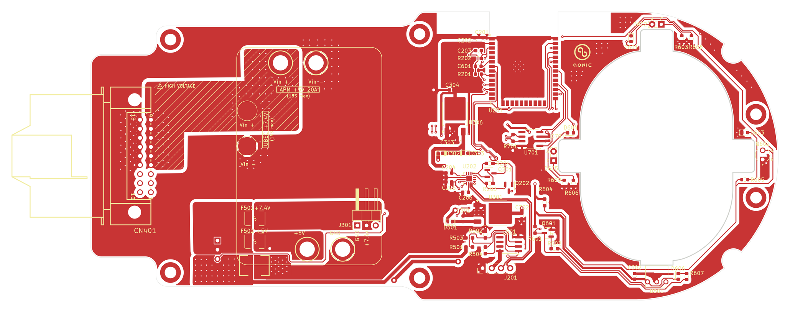
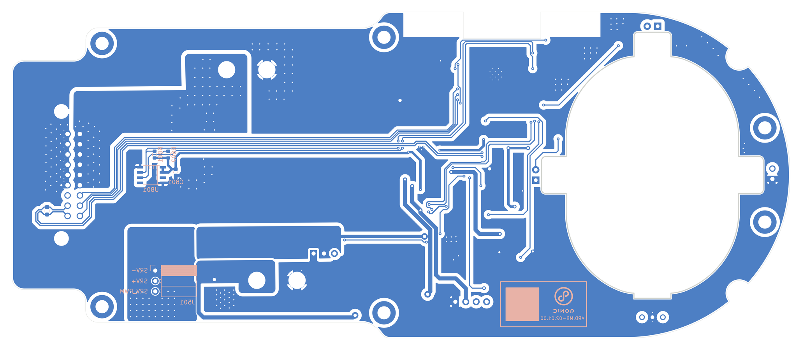
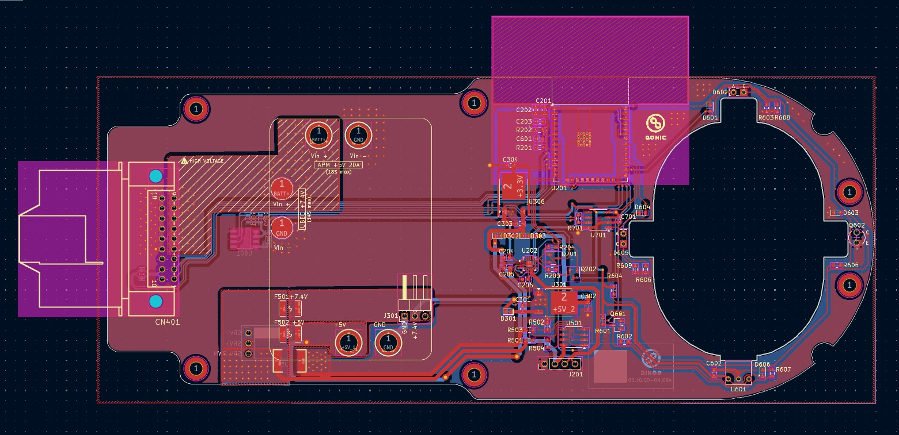
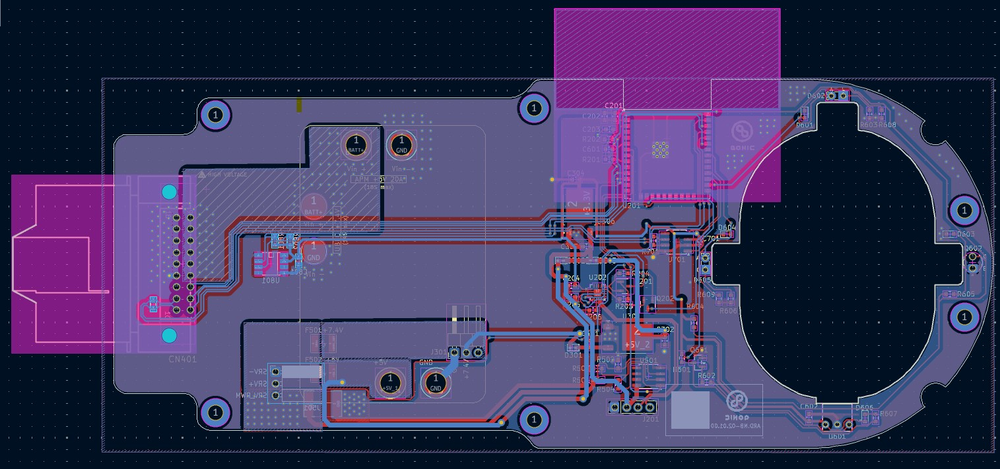
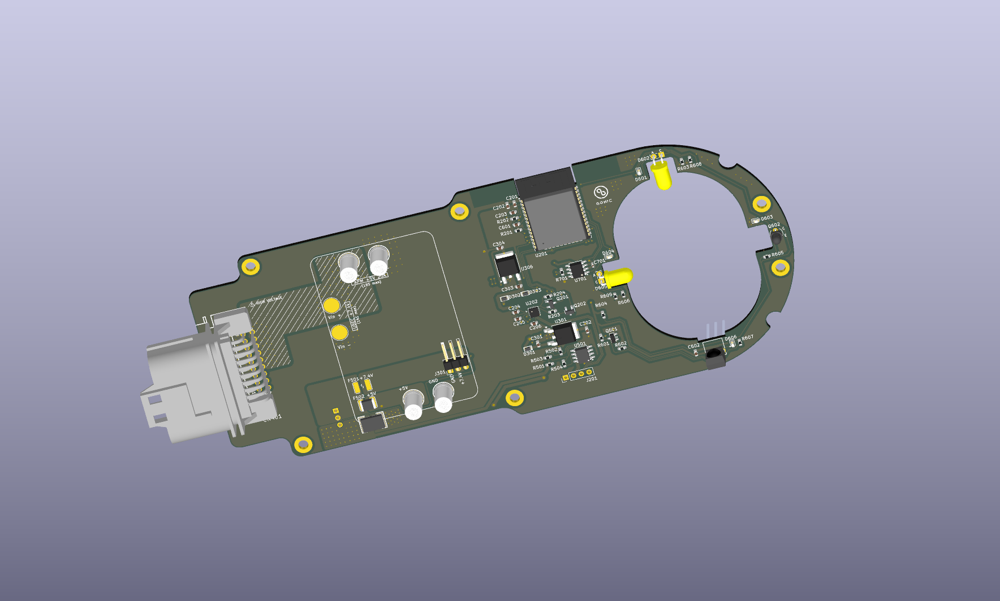
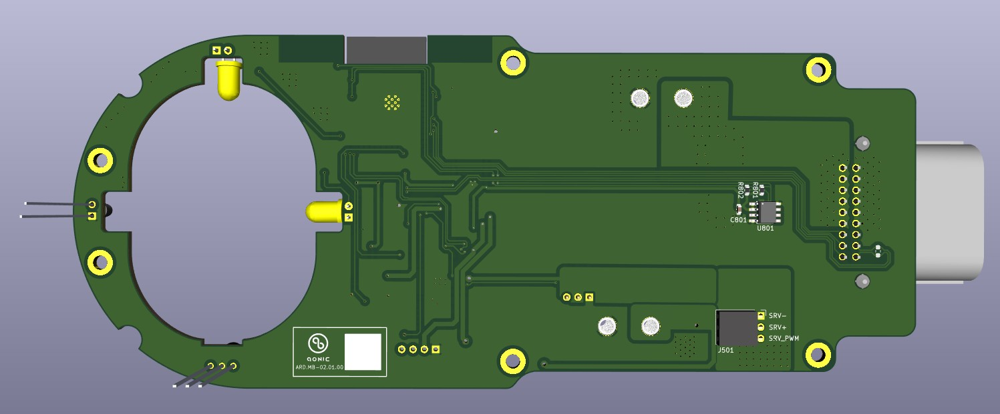
Developer’s circuit examples.
Source screenshots accompanying the Step 1 dispositions.
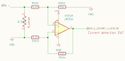
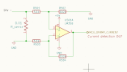
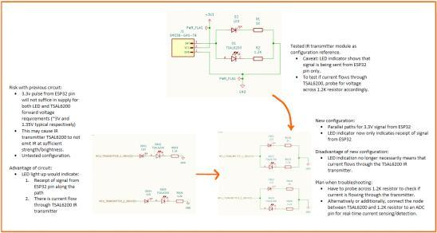
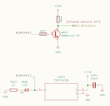
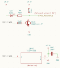
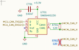
Download Step 1 evidence.
Includes the source review, developer notes and clearly labelled visual context. This is a review package, not a fabrication release.
Download ZIP · 1.5 MB